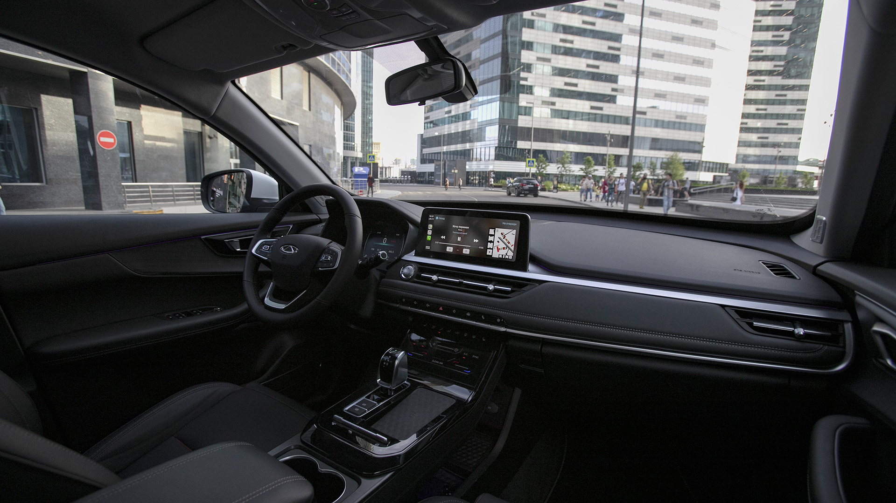
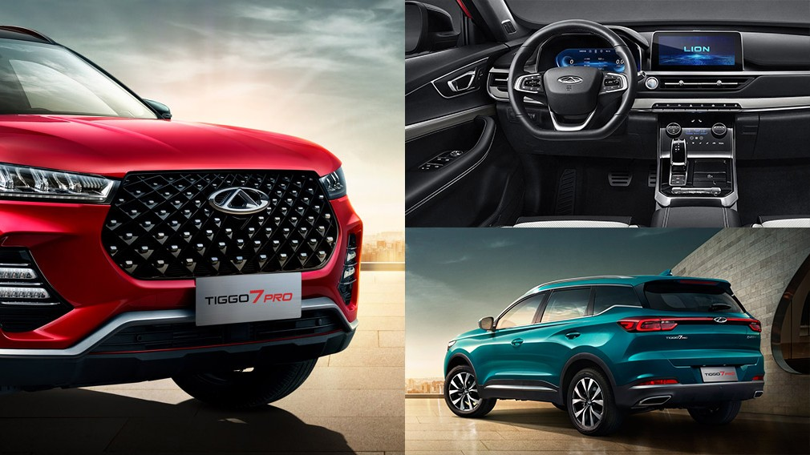
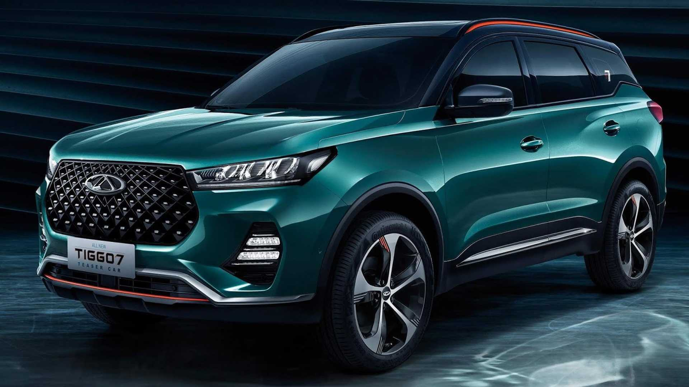
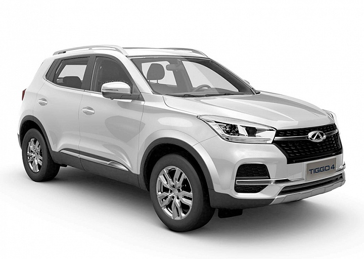
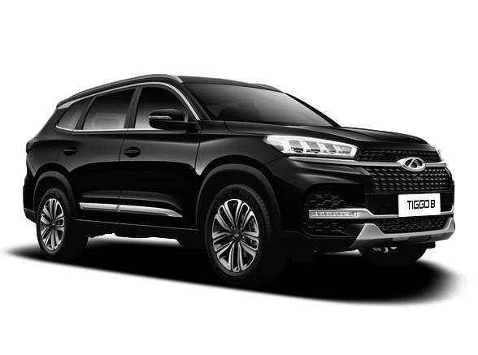
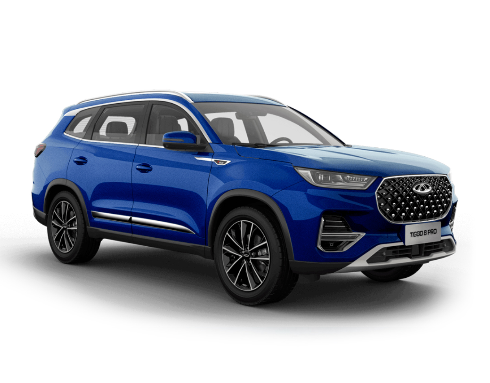

Дизайн модели интерпретирует яркую концепцию Movement, базирующуюся на развитии от элементов бионики к чувственной эстетике восприятия. Передняя решётка Tiggo 7 PRO выполнена в оригинальном стиле 3D-матрицы, создающей эффект глубокой перспективы за счёт игры света и теней. Матричные светодиодные фары заняли максимально высокое положение на стыке решётки радиатора и капота, и, благодаря хищному «прищуру», придают внешности Tiggo 7 PRO выразительный и престижный вид.

Ярко выраженные линии профиля кузова автомобиля в сочетании с тремя текстурными боковыми линиями, плавно ниспадающей крыши к задней стойке кузова и выступом спойлера добавляют облику автомобиля эффектности и стремительности.
Характерной особенностью кроссовера CHERY Tiggo 7 PRO являются задние светодиодные фонари, соединенные горизонтальной световой планкой. За счет их геометрии визуально увеличиваются ширина и устойчивость автомобиля.

Высокоресурсный бензиновый двигатель 1.5 TURBO мощностью 147 л.с. обладает максимальным крутящим моментом в 210 Нм. Силовой агрегат обеспечивает разгон до 100 км/ч за 9.8 сек, максимальная скорость — 186 км/ч.
Двигатель сочетается с вариатором CVT25, способным передавать максимальный крутящий момент в 280 Нм, что позволяет обеспечить автомобилю быстрый старт и моментальное ускорение. Расход топлива на 100 км составляет в загородном режиме 6.6 литра, в комбинированном — 8.2 литра, в городском — 10.8 литра.
| Силовой агрегат |
Топливная экономичность |
| Модель двигателя - SQRE4T15C |
Тип трансмиссии - Вариатор CVT9 |
Расход топлива (город), л/100км - 10,8 |
Расход топлива (трасса), л/100км - 6,6 |
| Объем двигателя, см. куб. - 1498 |
Привод - Передний |
Расход топлива (смешанный), л/100км - 8,2 |
Топливо (бензин с октановым числом не менее) - 92 |
| Основные характеристики |
| Тип кузова - Полноразмерный SUV |
Количество мест - 5 |
Длина х Ширина x Высота, мм - 4500×1842×1705 |
Объем багажника, л - 475 |
| Колесная база, мм 2670 |
Дорожный просвет, мм - 190 |
Тормозные механизмы колес (передних/задних) - Дисковые вентилируемые/Дисковые невентилируемые |
| Фото |
Версия |
Описание |
|  |
Tiggo 4 |
Chery Tiggo 4 – компактный и потому очень практичный в городских условиях переднеприводный кроссовер. Яркий и динамичный Chery Tiggo 4 сочетает в себе все необходимое: высокий клиренс, комфортный просторный салон, эффектный внешний вид и мультимедиа последнего поколения. |
|  |
Tiggo 8 |
CHERY TIGGO 8 построен на модульной платформе T1X, которая является совместной разработкой Chery с компанией Jaguar Land Rover. Мощный двигатель 2.0 TURBO развивает 170 л.c., полностью адаптирован под АИ-92 и обладает крутящим моментом 250 Нм . Коробка передач - бесступенчатый вариатор CVT. Кроссовер CHERY TIGGO 8 достигает скорости 100 км/ч за 10 секунд, максимальная скорость — 200 км/ч. Расход топлива составляет в смешанном цикле 8,2 л/100 км. |
|  |
Tiggo 8 pro |
CHERY TIGGO 8 PRO заслуженно получил высшую оценку безопасности 5* по методике C-NCAP. Автомобиль оснащен системой безопасности ESP BOSCH 9.3, круговым обзором 360, датчиками парковки. Каркас кузова CHERY TIGGO 8 изготовлен из 5 сортов высокопрочной стали производства компании Benteler. Оцинкованный кузов, устойчивый к коррозии, адаптирован для эксплуатации в тяжелых климатических условиях. |